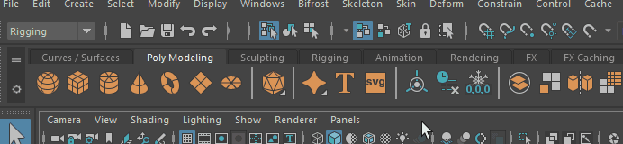
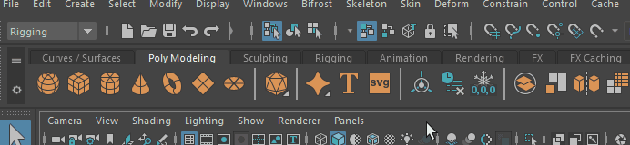
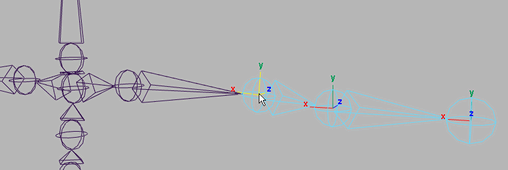

手动确定关节局部轴的方向
- 选择要设定其局部旋转轴方向的关节。
- 选择“显示 > 变换显示 > 局部旋转轴”(Display > Transform Display > Local Rotation Axes)。
将显示当前关节的局部旋转轴。
- 在状态行（工具栏）中单击“按组件类型选择”(Select by Component Type)
来启用“按组件类型选择”(Select by component type)模式，然后右键单击“选择杂项组件”(Select miscellaneous components)
 图标，并启用“局部旋转轴”(Local Rotation Axes)。
注： “按组件类型选择”(Select by Component Type)必须处于活动状态，才会显示“选择杂项组件”(Select miscellaneous components)图标。
图标，并启用“局部旋转轴”(Local Rotation Axes)。
注： “按组件类型选择”(Select by Component Type)必须处于活动状态，才会显示“选择杂项组件”(Select miscellaneous components)图标。现在可以选择关节的局部旋转轴了。
- 选择局部轴。

- 执行下列操作之一：
- 如果要输入局部轴的精确方向值，可以使用 MEL 命令，如下所示：
rotate -r -os 180 0 0;
该命令会将当前关节的局部轴围绕其 X 轴旋转 180 度。
- 如果要输入局部轴的精确方向值，可以使用 MEL 命令，如下所示：